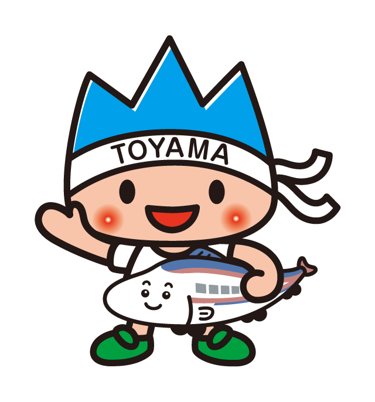

富山県／「元気とやまマスコット きときと君」及び「ぶりと君」のイラスト使用申請について
本文の保存版（2026-11-22）
出典URL：https://www.pref.toyama.jp/1021/kensei/kouhou/public/kitokito_mascot.html
本文へスキップします。
富山県
- 文字サイズ・色合い変更
- ふりがな表示
- 音声読み上げ
- Foreign Language
- 緊急情報
- 閲覧補助
- 情報検索メニュー
緊急情報
現在、情報はありません。
- 緊急情報一覧を見る
- 緊急情報RSS
閉じる
富山防災WEB
現在、情報はありません。
- 富山防災WEB
閉じる
閉じる
安全・安心情報
- 富山防災WEB
- とやま医療情報ガイド
- くらしの安心情報
- とやま食の安全・安心情報
- 子育てネッ!とやま
サイト内検索
テーマから探す
- 防災・安全
- くらし・健康・教育
- 産業・しごと
- 県土づくり
- 魅力・観光・文化
- 県政の情報
トップページ > 県政の情報 > 組織・行財政 > 組織別案内 > 知事政策局 > 広報課 > 「元気とやまマスコット きときと君」及び「ぶりと君」のイラスト使用申請について
更新日：2026年3月16日
ここから本文です。
「元気とやまマスコット きときと君」及び「ぶりと君」のイラスト使用申請について
富山県及び北陸新幹線について広く県内外にPRするため、「元気とやまマスコット きときと君」と「ぶりと君」について、商標権を取得し、営業又は販売物に使用できるようにしました。
商品、パッケージ、景品、チラシ等に「元気とやまマスコット きときと君」や「ぶりと君」のイラストの使用を希望される場合は、県に申請のうえ、使用いただくことができます。
詳しくは、関連ファイルの「使用マニュアル」をご覧ください。

1.イラストのデザイン・使用方法について
イラストのデザイン・種類や使用上の注意等については、関連ファイルの「使用マニュアル」をご覧ください。
2.使用承認申請等について
「きときと君」及び「ぶりと君」のイラストを使用を希望される方は、マスコット使用申請書をメールにてご提出ください。
なお、次のいずれかに該当する場合には承認できません。
- (1) 営利団体等が自己の利益を主たる目的として使用するとき。
- (2) 県又はマスコットのイメージを傷つけるおそれがあると認められるとき。
- (3) 法令、公序良俗に反すると認められるとき。
- (4) 特定の個人、政党、宗教団体を支援し、又は支援するおそれがあると認められるとき。
- (5) 第三者の利益を害すると認められるとき。
- (6) マスコットの使用によって誤認又は混同を生じさせるおそれがあると認められるとき。
- (7) マスコットの著しい変更（ポーズの変更、目鼻等の位置の変更、図案に別の図案を重ねること）その他使用方法が適当でないと認められるとき。
- (8) その他知事がマスコットの使用について不適当と認めるとき。
3.提出先
富山県知事政策局 広報課
- 提出先：akoho★pref.toyama.lg.jp（★を＠に変えてください。）
- 件名を、「【きときと君】イラスト使用申請について」としてください。
関連ファイル
- 使用マニュアル（PDF：2,837KB）
- 申請書様式（Word文書）（ワード：43KB）
- 申請書様式（PDF形式）（PDF：85KB）
- 申請事前チェックシート（Word文書）（ワード：41KB）
- 申請事前チェックシート（PDF形式）（PDF：164KB）
- 【参考】使用規程（PDF：133KB）
- 【参考】イラスト仕様（PDF：567KB）
お問い合わせ
所属課室：知事政策局広報課
〒930-8501 富山市新総曲輪1-7 県庁本館2階
電話番号：076-444-8909
ファックス番号：076-444-3478
関連情報
目的別情報
資格取得
許認可・届出
助成・融資
相談窓口
このページに知りたい情報がない場合は
情報検索ページ
よくある質問
組織別情報から探す
サイト内検索
対象者別トップページへ
県民の方々
魅力・観光
事業者の方々
より良いウェブサイトにするためにみなさまのご意見をお聞かせください
1：役に立った
2：ふつう
3：役に立たなかった
このページの情報は見つけやすかったですか？1：見つけやすかった
2：ふつう
3：見つけにくかった
広報課
- 中東情勢に関する相談窓口・関連情報
- ワークショップ若者広報ラボ
- 「元気とやまマスコット きときと君」について
- 「元気とやまマスコット きときと君」の着ぐるみの貸出について
- 「元気とやまマスコット きときと君」及び「ぶりと君」のイラスト使用申請について
ページの先頭へ戻る
- 庁舎案内
- リンク集
- リンク・著作権・免責事項
について - 県ウェブサイトの考え方
- 県ウェブサイトの使い方
- 個人情報について
- ご意見・ご質問
- サイトマップ
- よくある質問
富山県庁
法人番号 7000020160008
〒930-8501 富山市新総曲輪1番7号
電話番号: (代表)076-431-4111
Copyright © Toyama Prefecture All rights reserved.
地図で使用する画像
- きときと君の画像
https://www.pref.toyama.jp/images/45539/kitokito_a.jpeg - きときと君の画像（予備）
https://corp-supporters.toyama-airport.jp/img/app/kitokito_kun.png